Task 01
Put the Mushroom into the Basket, Then Put the Orange into the Basket (Different Perturbations)
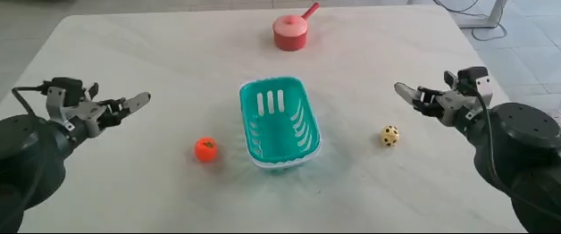
AED · Project Page
Paper summary
World Action Models (WAMs) couple visual dynamics prediction with action generation, yet they do not explicitly support the reuse of action experience across manipulation tasks. Furthermore, existing WAMs struggle to capture underlying cross-task semantic relationships that could guide target action prediction, as redundant background elements interfere with the extraction of key visual information. To address these challenges, we develop a novel Action Experience Dictionary (AED) that encodes historical physical action trajectories into shared action embeddings to support skill reuse and model cross-task relationships. Specifically, we first aggregate historical actions to align with visual observations and retrieve action embeddings from the AED using a pretrained action tokenizer. Subsequently, we visually condition the pooled embeddings through cross-attention and prepend them to noisy action tokens, providing interaction context and action intent for prediction. To encourage action-related motion modeling and reduce reliance on irrelevant background cues, we introduce a motion-aware transition loss that supervises visual feature change prediction over random temporal intervals. Experiments on simulation benchmarks and in real-world cross-embodiment settings demonstrate that our model outperforms the baselines.
Why action experience matters
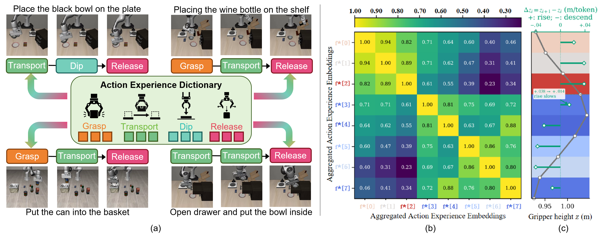
Method
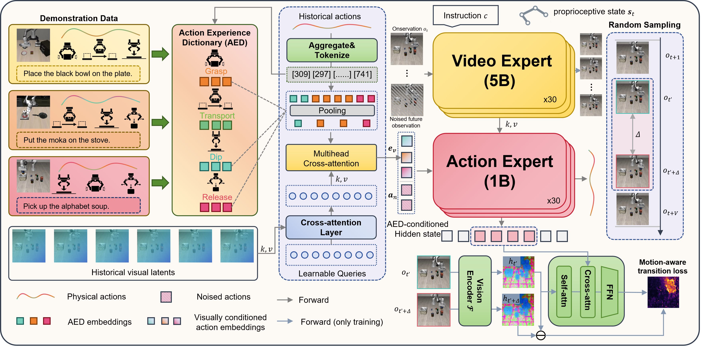
Real-world evaluation
Third-person-view demonstrations organized by robot platform. All videos are shown at 4× speed.
Robot 01
Task 01

Task 02
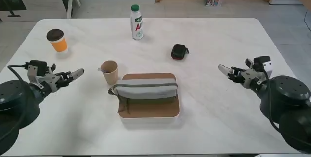
Task 03
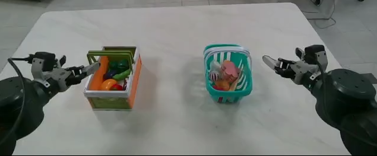
Task 04
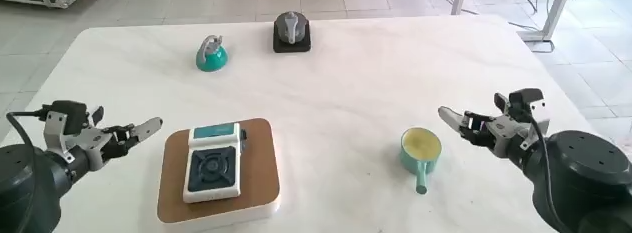
Task 05
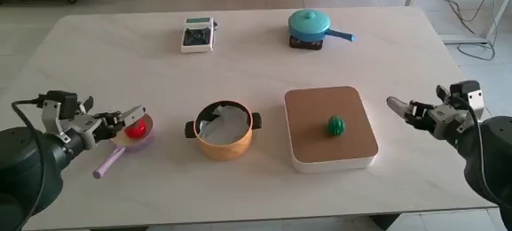
Task 06
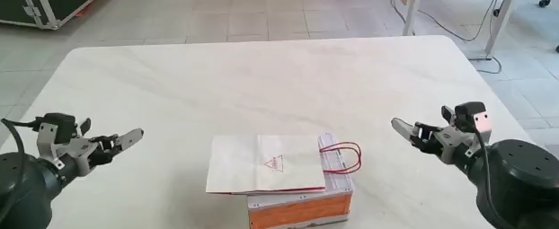
Task 07
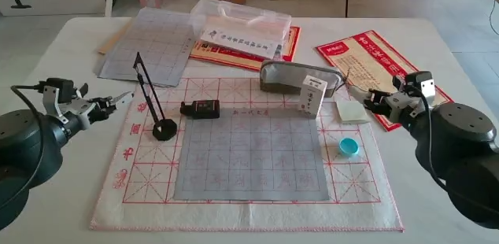
Task 08
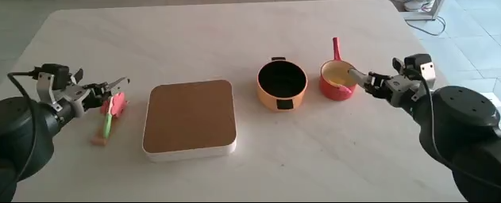
Task 09
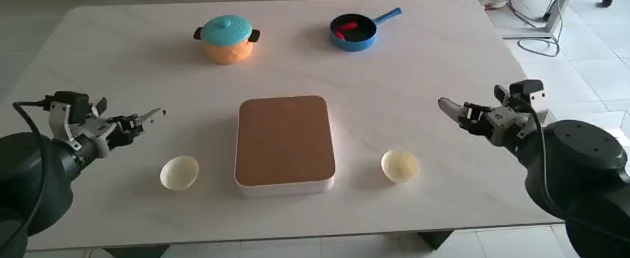
Task 10
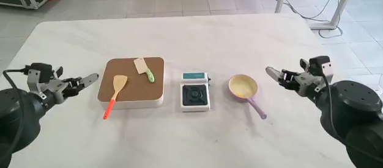
Robot 02
Task 01
Task 02
Task 03
Task 04
Task 05
Simulation evaluation
Thirty-seven successful rollouts selected across LIBERO, LIBERO-Plus, and RoboTwin.
Benchmark 01
4 suites · 4 videos
Episode 032 · Successful rollout
Episode 000 · Successful rollout
Episode 048 · Successful rollout
Episode 004 · Successful rollout
Benchmark 02
7 perturbation modes · 21 videos
Background texture perturbation
Background texture perturbation
Background texture perturbation
Camera viewpoint perturbation
Camera viewpoint perturbation
Camera viewpoint perturbation
Language instruction perturbation
Language instruction perturbation
Language instruction perturbation
Light condition perturbation
Light condition perturbation
Light condition perturbation
Object layout perturbation
Object layout perturbation
Object layout perturbation
Robot initial state perturbation
Robot initial state perturbation
Robot initial state perturbation
Sensor noise perturbation
Sensor noise perturbation
Sensor noise perturbation
Benchmark 03
12 distinct tasks · 12 videos
Episode 092 · Successful rollout
Episode 048 · Successful rollout
Episode 021 · Successful rollout
Episode 099 · Successful rollout
Episode 022 · Successful rollout
Episode 049 · Successful rollout
Episode 088 · Successful rollout
Episode 014 · Successful rollout
Episode 097 · Successful rollout
Episode 076 · Successful rollout
Episode 011 · Successful rollout
Episode 000 · Successful rollout